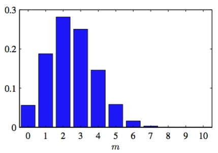

首先,我们考虑一个二元随机变量。例如，可能描述了扔硬币的结果，表 示“正面”，表示反面。我们可以假设由一个损坏的硬币，这枚硬币正面朝上的概率未必等于反面朝上的概率。的概率被记作参数：
其中，那么就得到。的概率分布就可以写成：
这叫做伯努利分布（Bernoulli distribution）。很容易验证这个分布是标准化的，它的均值和方差：
现在假设的观察数据集。假设观测值是独立的从中抽取，那么就可以构造关于的似然函数：
在频率学的观点中，可以通过最大化似然函数来估计的值，或者等价地，最大化对数似然函数。在伯努利分布的情形下，对数似然函数为：
值得一提的是对数似然函数只通过依赖于次观测值。这个和式是这个分布下数据的充分统计量（sufficient statistic），我们后面将详细研究充分统计量的重要作用。对关于微分并使它等于0，我们就得到最大似然估计：
也被称为样本均值（sample mean）。如果我们把数据集里（正面朝上）的观测的数量记作，那么我们可以把公式（2.7）写成下面的形式：
在最大似然的框架中，数据集中正面朝上的比列就是它的的概率。
现在，我们抛3次硬币，并观测到3次都是正面朝上，那么就有 。在这个例子中，最大似然会预测将来所有的观测都是正面朝上。常识告诉我们这是不合理的。事实上，这是最大似然过拟的一个极端例子。稍后会看到，通过引入的先验分布，我们会得到一个更合理的结论。
我们可以计算出数据集大小为的具有个的观测值的概率分布。这被称为二项式分布（binomial distribution），根据公式（2.5）得到它正比于。为了得到标准化的系数，在次抛硬币的过程中，需要把所有出现正面的次数加起来得到，所以二项式分布可以写成：
其中
表示从个相同的物体中选出个的方式的次数。图2.1展示了当时的二项式分布。

图 2.1 二项式分布
二项式分布的均值和方差可以从练习1.10的结果：独立事件的均值的和等于和的均值、方差的和等于和的方差来获得。根据，且对于由公式（2.3）（2.4）给出的每个观测值的均值和方差，我们得到：
这些结果可以直接通过微积分来证明。